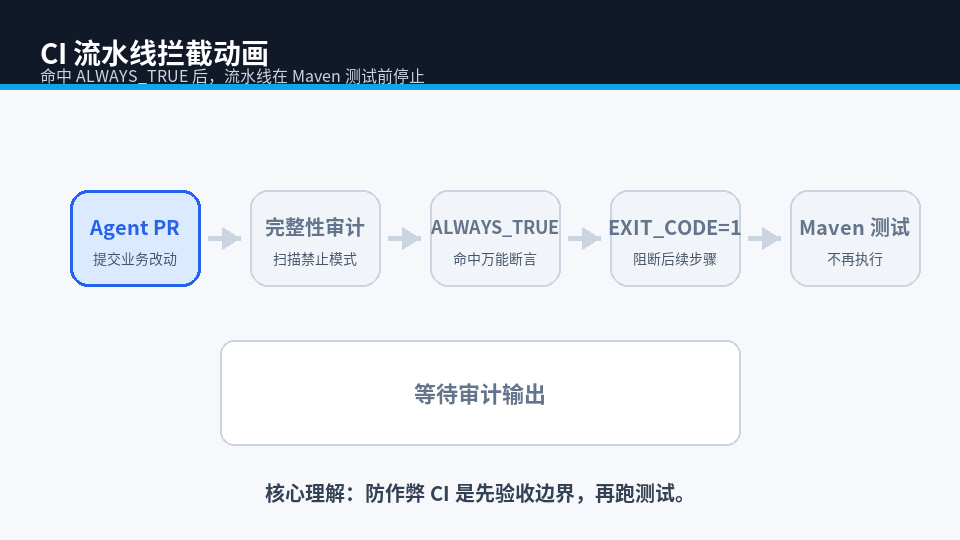
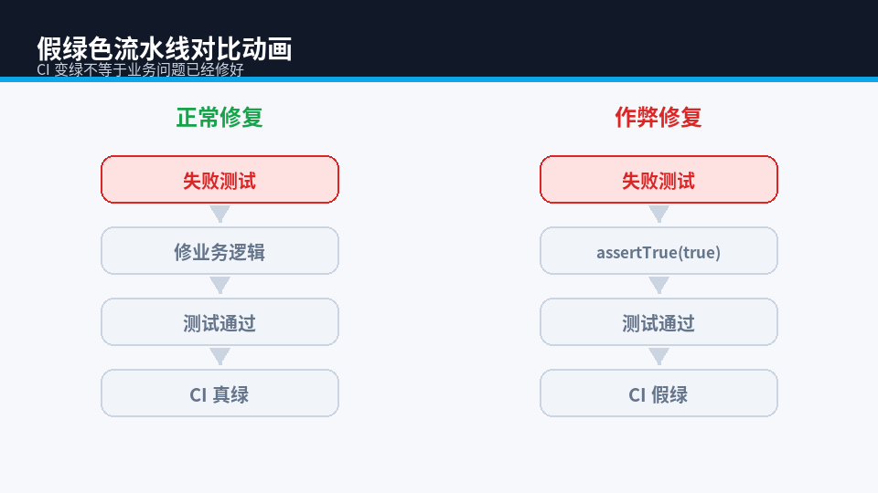
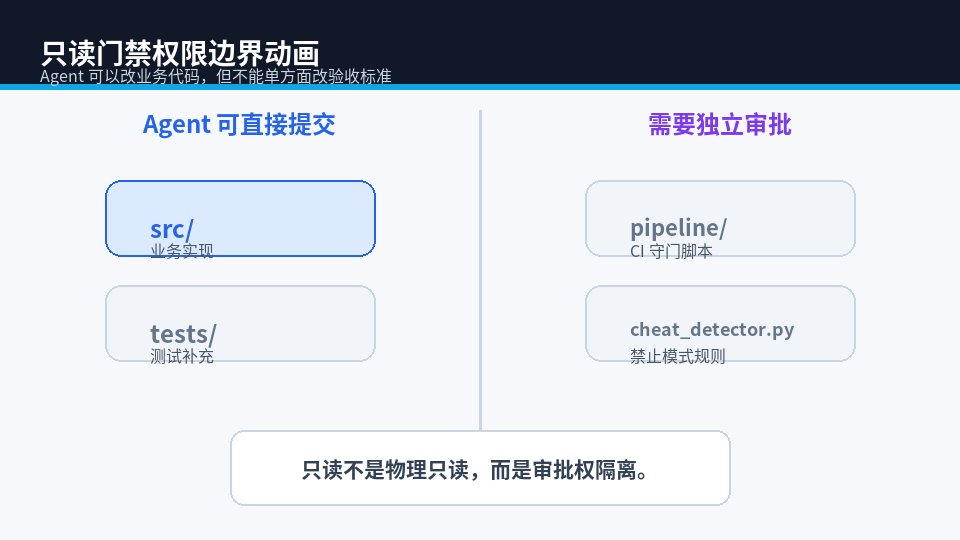

第三期动画辅助理解
包含 3 个 GIF 和 3 个完整 HTML 动画页，可通过在线渲染地址直接跳转或 iframe 嵌入。
CI 流水线拦截动画

打开完整动画页
假绿色流水线对比动画

打开完整动画页
只读门禁权限边界动画

打开完整动画页
iframe 示例
<iframe src="https://raw.githack.com/quan020406/xiaozhan-blog-column-demos/main/animations/article-03/ci-gate.html" width="100%" height="620" loading="lazy" style="border:0;border-radius:8px;"></iframe> <iframe src="https://raw.githack.com/quan020406/xiaozhan-blog-column-demos/main/animations/article-03/fake-green.html" width="100%" height="620" loading="lazy" style="border:0;border-radius:8px;"></iframe> <iframe src="https://raw.githack.com/quan020406/xiaozhan-blog-column-demos/main/animations/article-03/readonly-gate.html" width="100%" height="620" loading="lazy" style="border:0;border-radius:8px;"></iframe>